ESM (ECMAScript Modules): Es el sistema de módulos incorporado en el estándar ECMAScript (ES6 y versiones posteriores) y es compatible con JavaScript moderno tanto en el navegador como en entornos de servidor como Node.js. A diferencia de CommonJS, los módulos ESM se cargan de forma
asíncrona y su estructura incluye import para importar módulos y export para exportar valores desde el módulo.
Los módulos ESM (ECMAScript Modules) son nativos de JavaScript y no requieren Node.js para ser utilizados. Los módulos ESM son una especificación de módulo incorporada en la especificación ECMAScript y se pueden utilizar directamente en los navegadores web modernos que soportan esta funcionalidad, como Chrome, Firefox, Edge, Safari y otros.
Con los módulos ESM, se pueden definir y exportar objetos, funciones y variables desde un módulo, y luego importarlos y utilizarlos en otros módulos utilizando la sintaxis import y export. Los módulos ESM proporcionan una forma más fácil y simple de modularizar el código en una aplicación y mejorar su legibilidad, mantenimiento y escalabilidad.
Aunque los módulos ESM se han vuelto cada vez más populares en la comunidad de JavaScript, todavía hay algunas limitaciones y problemas de compatibilidad que pueden requerir el uso de herramientas de compilación como Babel y Webpack para convertir los módulos ESM en un formato compatible con navegadores más antiguos o versiones anteriores de Node.js.
Módulos de ECMAScript (ESM): Es el estándar oficial de JavaScript para la creación de módulos, introducido en ES6. Se definen mediante la sintaxis import y export.
Diferencias entre CJS y ESM
Síncrono vs. Asíncrono:
CommonJS (CJS): La carga de módulos es síncrona. Los módulos se cargan y ejecutan secuencialmente.
ECMAScript Modules (ESM): La carga de módulos es asíncrona por defecto, lo que significa que los módulos pueden cargarse de forma asincrónica.
Extensión de archivos al importar módulos locales:
CommonJS (CJS): Cuando importamos módulos locales no es necesaria la extensión.
ECMAScript Modules (ESM): Al importar módulos locales es obligatorio especificar la extensión.
Importación/Exportación:
CommonJS (CJS): Utiliza require() para importar módulos y module.exports o exports para exportar valores.
ECMAScript Modules (ESM): Utiliza import para importar módulos y export para exportar valores.
Evaluación en Tiempo de Ejecución:
CommonJS (CJS): La evaluación y ejecución del código del módulo ocurre durante el tiempo de ejecución.
ECMAScript Modules (ESM): La evaluación del código del módulo ocurre durante el tiempo de importación, incluso antes de la ejecución.
Compatibilidad con Variables Dinámicas:
CommonJS (CJS): Permite la importación de módulos de manera dinámica utilizando require() en cualquier punto del código.
ECMAScript Modules (ESM): La importación de módulos es estática, lo que significa que las importaciones deben ser declaradas en la parte superior del archivo y no pueden depender de condiciones o variables dinámicas.
Contexto del Módulo:
CommonJS (CJS): El module objeto está disponible para acceder a información sobre el módulo actual.
ECMAScript Modules (ESM): El import.meta objeto proporciona información sobre el módulo actual.
Compatibilidad con el Uso en el Navegador:
CommonJS (CJS): Diseñ2do principalmente para entornos de servidor como Node.js y no es compatible de forma nativa con navegadores web.
ECMAScript Modules (ESM): Diseñado para ser compatible tanto con entornos de servidor como con navegadores web.
Extensión de Archivo:
CommonJS (CJS): Los archivos de módulos generalmente utilizan la extensión .js.
ECMAScript Modules (ESM): Los archivos de módulos pueden utilizar la extensión .mjs o .js con la configuración adecuada.
Formas de Importación:
CommonJS (CJS): Importa un objeto que representa el módulo completo.
ECMAScript Modules (ESM): Importa solo lo que se necesita, permitiendo importaciones más específicas.
Compatibilidad con Variables Globales:
CommonJS (CJS): Puede afectar al objeto global al agregar propiedades a global.
ECMAScript Modules (ESM): El ámbito del módulo es local y no afecta directamente al objeto global.
¿Como especificar ESM en Node?
Para utilizar ESM nuestra aplicación con Node.js es necesario especificar en nuestro package-json el "type": "module" para especificarle a Node.js que nuestro sistema de modulos será ESM.
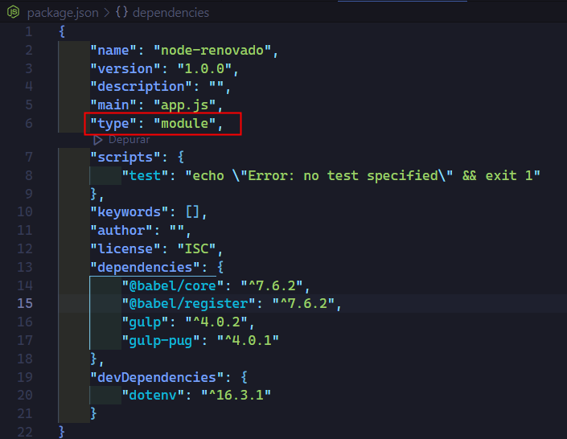
Exportación e Importación
Exportación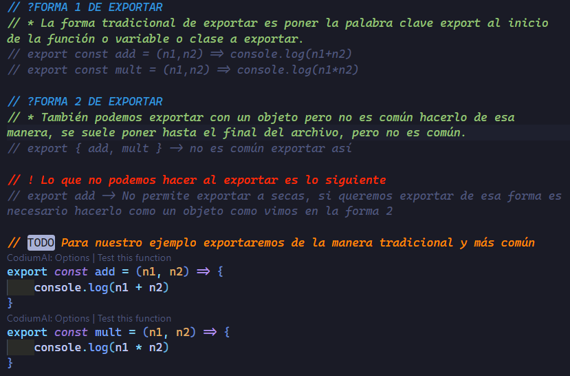
Importación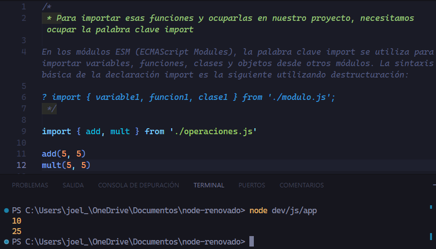
Exportación e Importación por defecto
En el sistema de módulos ESM se permite exportar algun valor por default solo que hay que tener en cuenta que esto no permite destructuring por lo cual no podemos utilizar { }, cuando importemos el valor por default se tiene que poner sin { } ya que no permite destructuración.
Una exportación por defecto es común en React ya que cuando exportamos por default, normalmente exportamos el componente.
Cuando importemos la función o cualquier valor podemos ocupar cualquier nombre de variable, ya que por defecto ya sabemos que por default se esta exportando el valor que nosotros especificamos.
Por último solo puede existir una exportación por default por módulo.
Su sintáxis básica es: export default valorAExportar
Exportación por default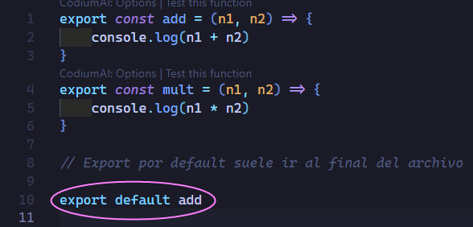
Importación por default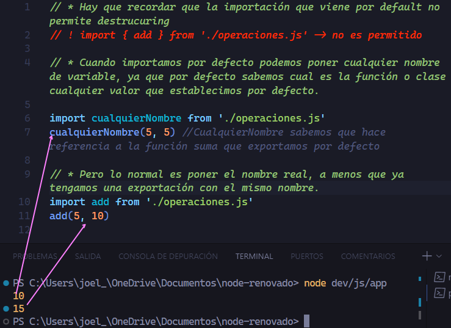
Tambien es posible convivir con la exportación normal y por default.
Exportación normal y por default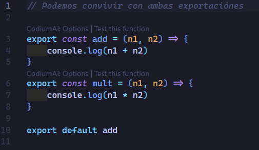
Importación normal y por default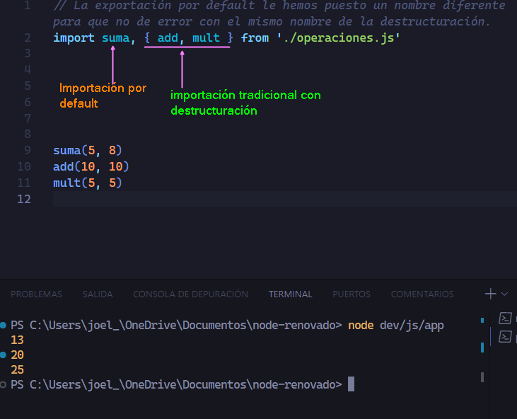
Exportación e Importación de objetos por default
Tambien es posible exportar por default un objeto con todos los valores que queramos que sean por defecto.
Esto es posible, pero hay que recordar que la exportación por defecto no permite destructuring, por lo cual no se recomienda, ya que cuando exportamos un objeto normalmente queremos destructurar.
Exportación de objetos por default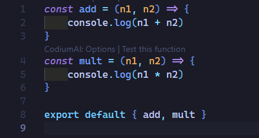
Importación de objetos por default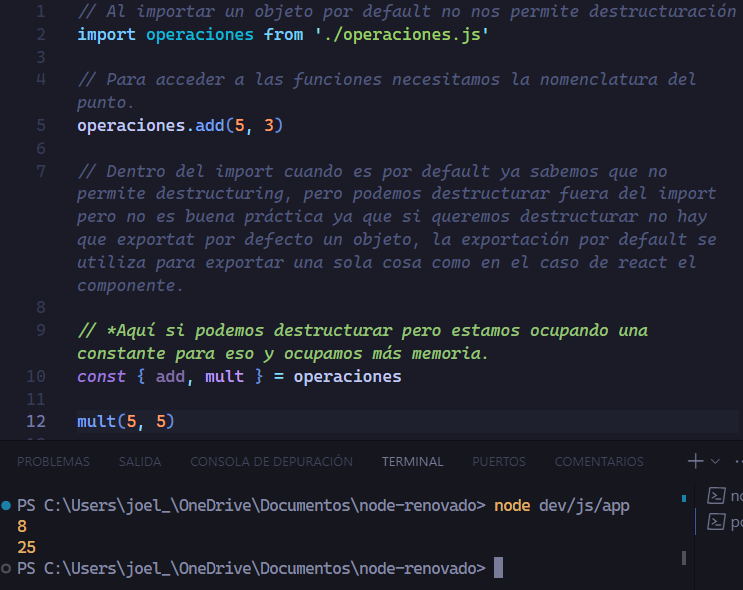
Cambiando el nombre de las exportaciones con un alias (as)
Si deseamos cambiar el nombre de una exportación tenemos que poner un alias a esa importación, por ejemplo si ya importamos una exportación y deseamos por alguna razón volver a llamar esa exportación lo que podemos hacer es utilizar un alias para cambiarle el nombre y poder ocupar esa misma exportación. Ya que si no hacemos esto nos arroja un error que la variable ya ha sido declarada.
Ya tenemos exportadas las funciones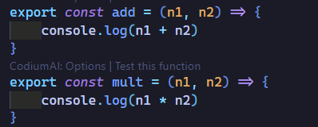
De esta manera cambiamos el nombre de una exportación con un alias.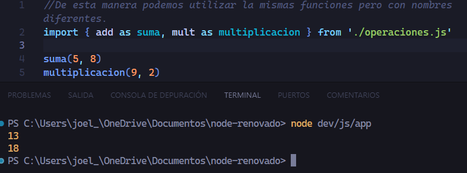
Tambien podemos hacer una importación total * con un alias (as). Supongamos que tenemos 20 funciones exportadas solo con la palabra reservada exports y no se está ocupando un export default donde se exportan esas 20 funciones como objetos, entonces no queremos estar haciendo lo siguiente:
import {funcion1,funcion2,funcion3,...}
Lo que podemos hacer y es muy común verlo es lo siguiente:
import * as operaciones from './operaciones.js'Supongamos que tenemos 20 funciones exportadas con exportDe esta manera importamos el total de todas las exportaciones y le asignamos un alias.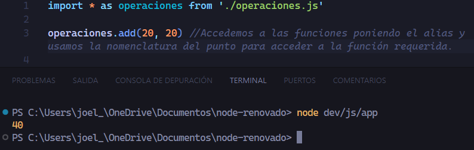
Diferencias importantes en ESM
A comparación del sistema de módulos CJS, cuando utilizamos ESM las variables __filename y __dirname no están disponibles.
En su lugar tenemos la palabra clave import que no solo sirve para importar, si no que a su vez es un objeto que contiene una propiedad meta.url
Cuando ejecutamos en consola import.meta.url lo que obtenemos es la ruta del módulo hasta el archivo,
vendria siendo el sustituto a __filename
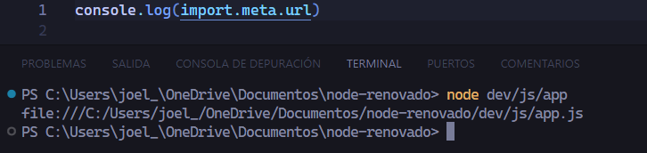
Tambien tenemos la opción de crear nuestras propias variables __filename y __dirname.
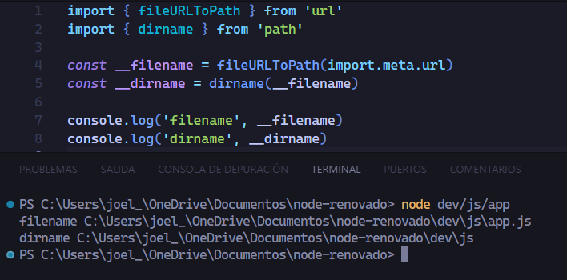
Otra diferencia importante es que ESM no permite importar un JSON como lo hace CJS.
Si intentamos importar un JSON con ESM obtendremos un error.
Aquí tenemos nuestro JSON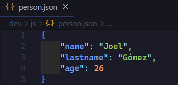
Ahora si intentamos importar el JSON veremos el error.
Como podemos ver nos da un error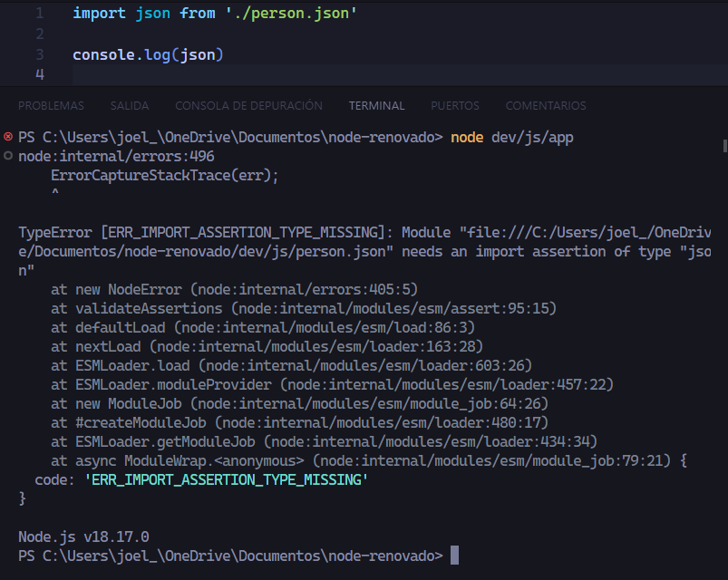
Si queremos importar un JSON con Esm, lo que podemos hacer es crear nuestra propia función require() para poder importar un JSON, ya que hay que recordar que en CJS es posible importar un JSON, pero para lograrlo con ESM necesitamos crear nuestro propio require().
Crear nuestra función require para importar un JSON con ESM
Para poder crear nuestra función require() necesitamos el módulo nativo o interno module.
El objeto module es un objeto global en Node.js que proporciona información sobre el módulo actual. Cada archivo de JavaScript en Node.js es considerado un módulo, y el objeto module proporciona información y funcionalidades relacionadas con ese módulo específico.
El objeto module incluye propiedades como exports (para exportar variables o funciones), filename (la ruta completa al archivo del módulo), y require (una referencia a la función require que puede utilizarse para cargar otros módulos).
El objeto module, nos proporciona un método llamado createRequire(path)
createRequire(): Es un método del objeto module que se utiliza para crear una función require específica para un módulo en particular. Toma un solo argumento: la URL del módulo que está utilizando actualmente.
Sintáxis
const require = createRequire(import.meta.url)
La función createRequire() crea y devuelve una nueva función require que está vinculada al contexto del módulo actual. La función require generada se puede utilizar para cargar módulos CommonJS dentro de un módulo ESM.
De esta manera ya podemos importar un JSON con ESM.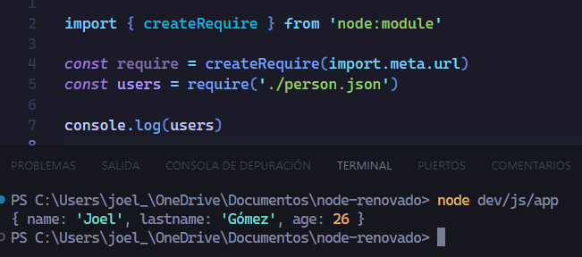